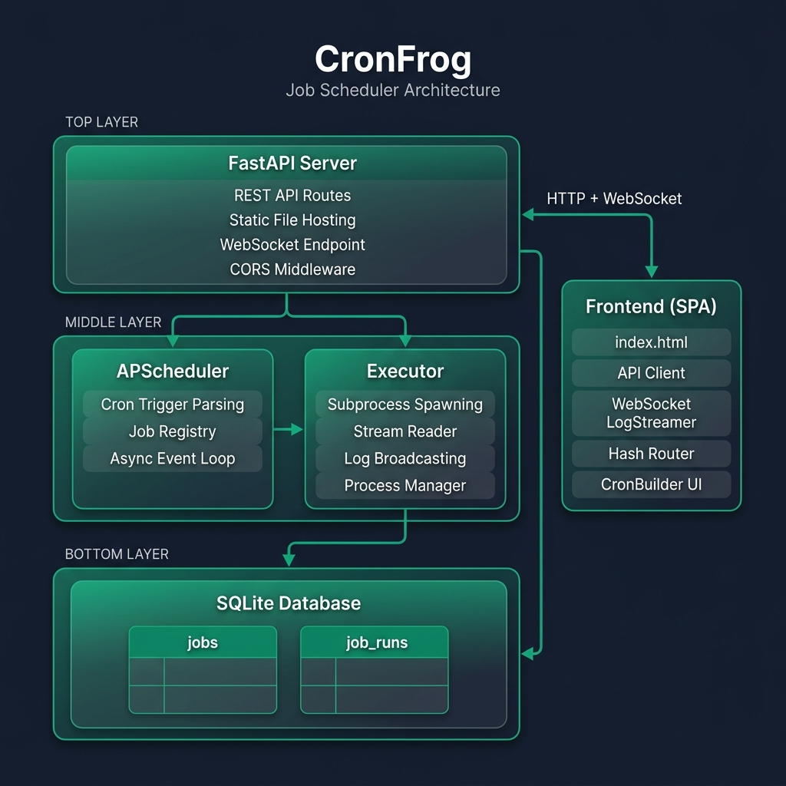
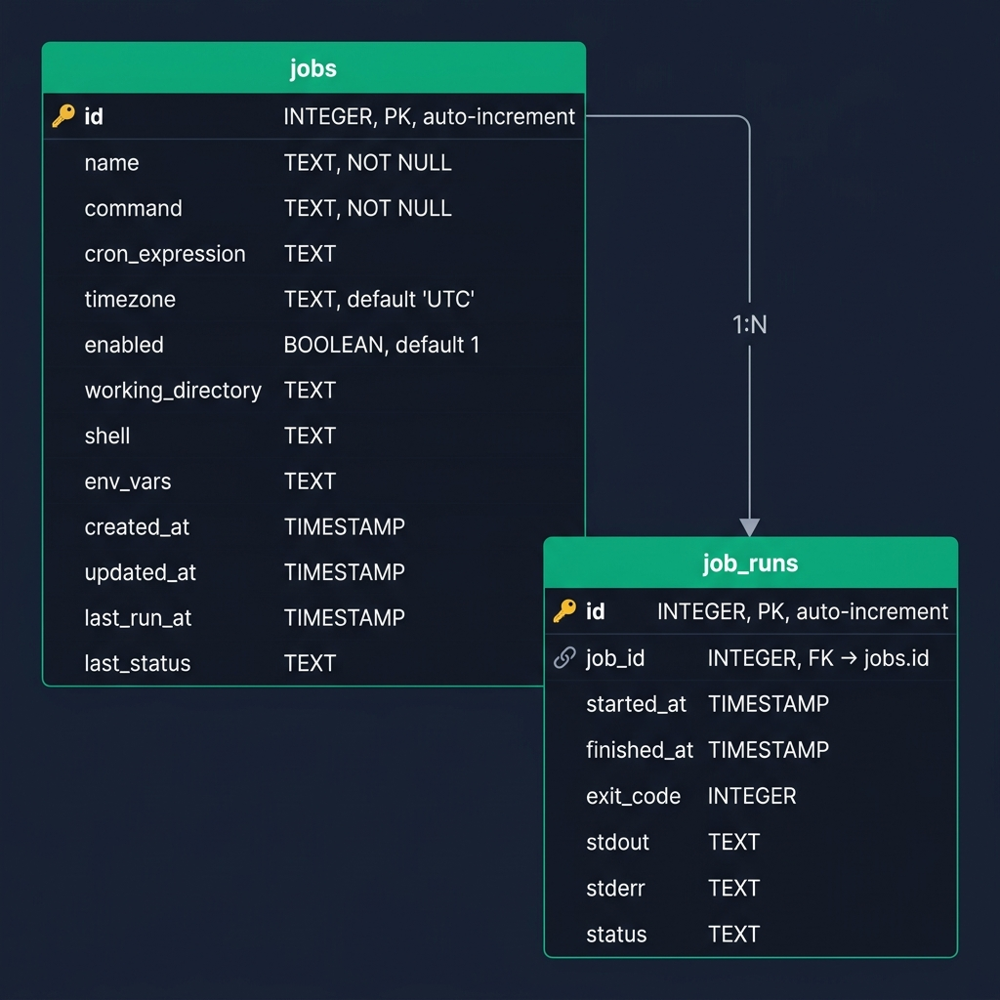
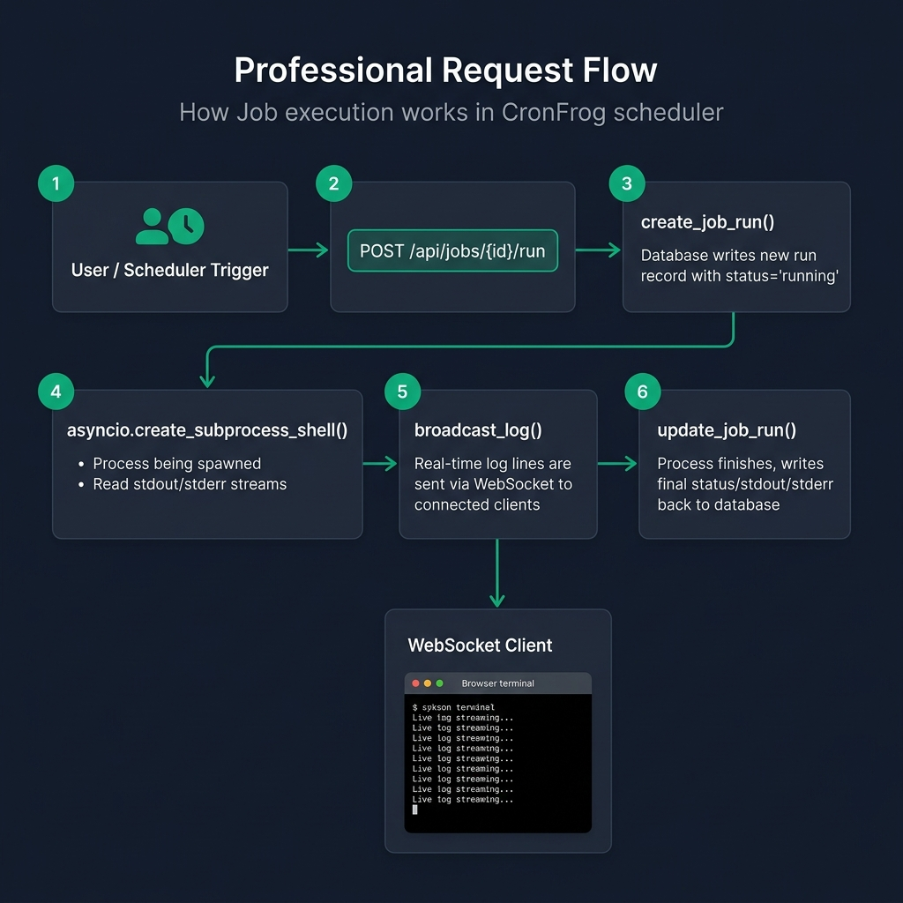

Technical Documentation
A complete guide to CronFrog's architecture, codebase, and API surface.
1. Overview
CronFrog is a self-contained job scheduling platform combining a Python backend (FastAPI + APScheduler) with a modern single-page web interface. It allows users to:
- Create scheduled jobs using standard 5-field cron expressions
- Execute shell commands or scripts on the host machine
- Monitor runs in real-time via WebSocket-powered live log streaming
- Manage everything through a REST API or the built-in web dashboard
The entire application runs as a single process — no external message brokers, no Redis, no Celery. Just Python, SQLite, and a browser.
Key Design Decisions
| Decision | Rationale |
|---|---|
| SQLite | Zero-configuration, serverless, perfect for single-node deployments |
| APScheduler (AsyncIO) | In-process scheduler sharing the same event loop as FastAPI |
| WebSockets | Eliminates polling; real-time stdout/stderr streaming |
| Static SPA | Vanilla JS frontend — no npm, no bundler, no build step |
| asyncio subprocess | Non-blocking execution within the async event loop |
2. Architecture
CronFrog follows a monolithic, single-process architecture. The HTTP server, background scheduler, and job executor all run within the same Python process and share a common asyncio event loop.

How the Three Engines Cooperate
| Engine | Role | Lifecycle |
|---|---|---|
| FastAPI | HTTP server + WebSocket host | Starts with uvicorn.run(), serves API and static files |
| APScheduler | Background cron engine | Started in lifespan() context, polls cron triggers on the event loop |
| Executor | Subprocess manager | Invoked by APScheduler or the API; spawns asyncio subprocesses |
All three share the same event loop, so the scheduler can call execute_job() without thread synchronization, the executor can broadcast logs to WebSocket clients directly, and the API can fire-and-forget a job via asyncio.create_task().
3. Project Structure

cronfrog/
├── run.py # Application entry point
├── requirements.txt # Python dependencies
├── LICENSE # MIT License
├── server/ # Backend Python package
│ ├── __init__.py
│ ├── main.py # FastAPI app, lifespan, WebSocket, static mount
│ ├── api.py # REST API route definitions
│ ├── database.py # SQLite data access layer
│ ├── scheduler.py # APScheduler configuration
│ └── executor.py # Async subprocess execution + log broadcasting
├── public/ # Frontend static SPA
│ ├── index.html # Single-page HTML
│ ├── css/style.css # Styling
│ ├── js/ # api.js, app.js, components.js, cron-builder.js, websocket.js
│ └── static/ # Logo assets
├── data/cronfrog.db # SQLite database (dev copy)
└── docs/ # Documentation assets4. Backend Deep Dive
4.1 Entry Point — run.py
The entry point is deliberately minimal. It ensures the project root is on sys.path, imports the FastAPI app instance from server.main, and starts the Uvicorn ASGI server. Port is configurable via the PORT environment variable (default: 8000).
4.2 Application Bootstrap — server/main.py
Uses FastAPI's lifespan async context manager to:
- Initialize the database — creates tables if they don't exist
- Start APScheduler — begins the background event loop
- Load saved jobs — re-registers all enabled jobs from the database
- Mount static files — serves the
public/directory at/
CORS middleware is configured to allow all origins. The WebSocket endpoint at /api/ws/runs/{run_id} handles live log connections with a late-join buffer replay.
4.3 REST API — server/api.py
All routes are prefixed with /api and handle CRUD operations for jobs, manual triggers, run history, and stats. When a job is created or updated with enabled=True, it's automatically registered with APScheduler. Manual runs use asyncio.create_task() for fire-and-forget execution.
4.4 Database Layer — server/database.py
A thin Data Access Layer (DAL) over SQLite using Python's built-in sqlite3 module. Each function opens a connection, performs the operation, and closes it. The database defaults to ~/.cronfrog/data/cronfrog.db to prevent Uvicorn --reload restart loops.
4.5 Scheduler — server/scheduler.py
Wraps APScheduler's AsyncIOScheduler. Converts standard 5-field cron expressions into trigger objects using CronTrigger.from_crontab(). On startup, all enabled jobs are re-registered (load_jobs_into_scheduler()).
4.6 Executor — server/executor.py
The most complex module. Manages the full lifecycle of job execution:
- Creates a run record in the database
- Merges environment variables and resolves the shell executable
- Spawns an async subprocess via
asyncio.create_subprocess_shell() - Reads stdout/stderr concurrently with
asyncio.gather() - Broadcasts each line to connected WebSocket clients in real-time
- Finalizes the run record with exit code, output, and status
Maintains three in-memory registries: active_processes (for kill support), active_logs (buffer for late-joining clients), and run_websockets (connected viewers).
5. Database Schema

jobs Table
| Column | Type | Description |
|---|---|---|
id | INTEGER PK | Unique job identifier (auto-increment) |
name | TEXT NOT NULL | Human-readable job name |
command | TEXT NOT NULL | Shell command to execute |
cron_expression | TEXT | Standard 5-field cron expression |
timezone | TEXT | Timezone for cron evaluation (default: UTC) |
enabled | BOOLEAN | Whether the job is active in the scheduler |
working_directory | TEXT | Working directory for the subprocess |
shell | TEXT | Shell executable (e.g., /bin/bash) |
env_vars | TEXT | JSON string of environment variables |
created_at | TIMESTAMP | Record creation time |
updated_at | TIMESTAMP | Last modification time |
last_run_at | TIMESTAMP | Most recent execution timestamp |
last_status | TEXT | Most recent execution status |
job_runs Table
| Column | Type | Description |
|---|---|---|
id | INTEGER PK | Unique run identifier (auto-increment) |
job_id | INTEGER FK | Parent job reference → jobs(id) |
started_at | TIMESTAMP | Execution start time |
finished_at | TIMESTAMP | Execution end time |
exit_code | INTEGER | Process exit code (0 = success) |
stdout | TEXT | Captured standard output |
stderr | TEXT | Captured standard error |
status | TEXT | running, success, or failed |
Relationship: Each job can have many run records (1:N). Runs are ordered by id DESC and limited to 50 per query.
6. API Reference
All endpoints are prefixed with /api. The auto-generated Swagger UI is available at /docs when the server is running.
Jobs CRUD
| Method | Endpoint | Description |
|---|---|---|
GET | /api/jobs | List all jobs with next run times |
POST | /api/jobs | Create a new job |
GET | /api/jobs/{id} | Get a single job by ID |
PUT | /api/jobs/{id} | Update a job's configuration |
DELETE | /api/jobs/{id} | Delete a job |
Job Control
| Method | Endpoint | Description |
|---|---|---|
POST | /api/jobs/{id}/start | Enable and schedule a job |
POST | /api/jobs/{id}/stop | Disable and unschedule a job |
POST | /api/jobs/{id}/run | Trigger immediate execution |
POST | /api/jobs/{id}/runs/{rid}/kill | Terminate a running process |
Runs & Stats
| Method | Endpoint | Description |
|---|---|---|
GET | /api/jobs/{id}/runs | List last 50 runs for a job |
GET | /api/jobs/{id}/runs/{rid} | Get details of a specific run |
GET | /api/stats | Dashboard statistics (total, active, failed) |
Example Response — GET /api/stats
{
"total_jobs": 5,
"active_jobs": 3,
"failed_runs": 1
}7. WebSocket Protocol
Endpoint: ws://localhost:8000/api/ws/runs/{run_id}
All messages are JSON-encoded strings pushed from the server to the client.
Message Types
| Type | Description | Example |
|---|---|---|
stdout | A line of standard output | {"type":"stdout","data":"Backup complete\n"} |
stderr | A line of standard error | {"type":"stderr","data":"Warning: low disk\n"} |
close | Server closing the stream | {"type":"close"} |
Late-Join Buffer
If a client connects after a job has started, the server replays all buffered log lines from active_logs[run_id] before streaming new lines. This ensures no output is ever missed.
8. Frontend Deep Dive
The frontend is a vanilla JavaScript SPA with no build step, no framework, and no npm dependencies. It's served directly as static files by FastAPI.
Module Breakdown
| File | Purpose |
|---|---|
api.js | Fetch-based HTTP client wrapping all /api/* calls |
app.js | Central controller with hash-based router (window.location.hash) |
components.js | Stateless HTML template renderers for stats cards, table rows, badges |
cron-builder.js | Interactive cron expression builder with preset tabs |
websocket.js | LogStreamer class for WebSocket connections and auto-scrolling terminal |
Route Map
| Hash | View | Data Loader |
|---|---|---|
#dashboard | Dashboard | Fetches stats + active jobs |
#jobs | Jobs list | Fetches all jobs, applies search filter |
#job-edit/{id} | Edit form | Populates form from API or resets for new |
#job-detail/{id} | Detail + terminal | Loads runs, connects WebSocket |
Design System
The CSS implements a dark-mode glassmorphism theme using CSS custom properties. Key tokens include emerald green (#10b981) as the primary accent, Inter as the sans-serif font, Fira Code for monospace, and translucent backdrop-filter: blur() panels.
9. Job Execution Flow

Step-by-Step
- Trigger: Manual (POST /api/jobs/{id}/run) or scheduled (APScheduler cron trigger)
- Prepare: Fetch job config, create run record, init log buffer, merge env vars, resolve shell
- Execute: Spawn subprocess, register in active_processes, launch concurrent stream readers
- Stream: Each line appended to buffer and pushed via WebSocket to all connected clients
- Complete: Capture exit code, determine status, write final output to DB, clean up registries, close WebSockets
10. Configuration & Environment
CronFrog is configured entirely through environment variables. No config files needed.
| Variable | Default | Description |
|---|---|---|
PORT | 8000 | TCP port for the HTTP/WebSocket server |
CRONFROG_DB_PATH | ~/.cronfrog/data/cronfrog.db | Absolute path to the SQLite database file |
Examples
# Windows (PowerShell)
$env:PORT = 8080
$env:CRONFROG_DB_PATH = "C:\data\cronfrog.db"
python run.py
# Linux / macOS
PORT=8080 CRONFROG_DB_PATH="/data/cronfrog.db" python run.py11. Dependencies
| Package | Purpose |
|---|---|
fastapi | ASGI web framework for REST API + WebSocket support |
uvicorn[standard] | ASGI server with WebSocket support |
apscheduler | Background job scheduler with cron trigger support |
websockets | WebSocket protocol implementation (used by Uvicorn) |
Additionally uses Python standard library modules: sqlite3, asyncio, json, os, sys, pathlib, datetime, contextlib.